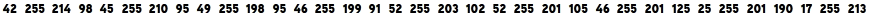
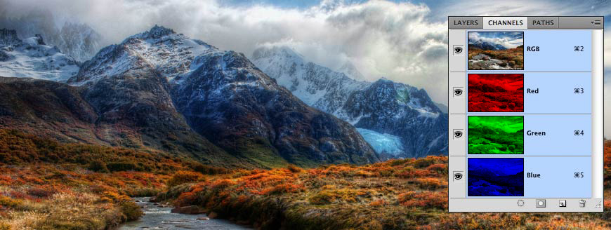
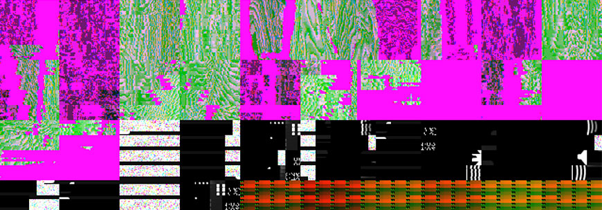
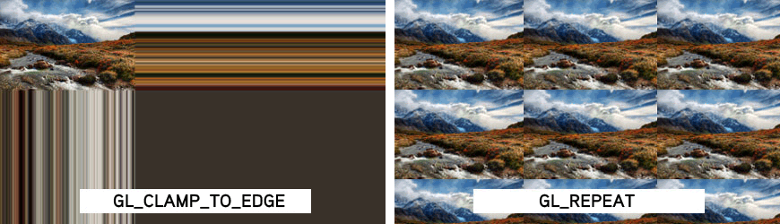
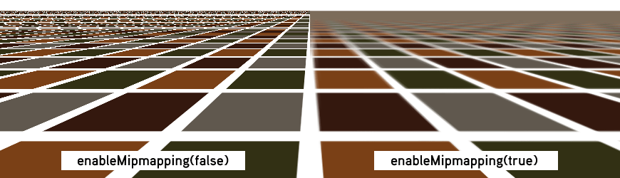

Images in Cinder
Written by Joshua Noble, with images by Robert Hodgin
In this little tutorial we're going to follow a path that starts with a file on the filesystem, say a PNG file, and ends with the image being drawn to the screen using OpenGL.

I'll explain a little of how this process works in general and a lot of how this process works in Cinder because, of course, that's what we're most interested in. The simplest way to load and display an image would be something similar to the following:
// probably in your App's setup() method
gl::Texture texture = loadImage( "image.jpg" );
// and in your App's draw()
gl::draw( texture );
Even though that code simply loads and draws an image, there's actually quite a lot going on behind the scenes. The first line creates a new OpenGL texture from the result of loadImage(). This function is used for loading the various image formats Cinder knows about, and can be used to read from files, URLs, resources and other sources, as we'll see later. And the second line actually draws the gl::Texture to your window using OpenGL.
These two lines highlight one of the core characteristics of Cinder's design: data, its I/O (Input/Output) and manipulation are carefully separated. Objects and functions are designed for distinct logical points in the process of loading, manipulating, and transferring data. For example, loadImage() is a standalone function, not a member of gl::Texture. Similarly, a gl::Texture doesn't draw itself - it's designed to represent image data, but not to manipulate or render it. To draw a gl::Texture, we use a standalone function as well, gl::draw(). As we explore more of Cinder's image capabilities, we'll look at some of the power and convenience this division of labor brings.
Continuing this theme of the separation of responsibilities, we introduce the Surface class. This class represents a block of bitmap data on the CPU, just as the gl::Texture represents a block of bitmap data on the GPU. That's all each does and that's a good thing. When you want to use a bitmap in OpenGL, you need to load it onto the GPU. Luckily Cinder makes this easy by allowing you to pass the bitmap to an OpenGL Texture by constructing a gl::Texture directly from a Surface:
Surface mySurface; // initialized elsewhere
gl::Texture texture = gl::Texture( mySurface );
The rest of this article is going to run through a few different topics in greater depth: Surfaces, Channels, I/O, and Textures, so feel free to skip around in a technologically enhanced fashion or to read along in the time honored "beginning to end" fashion.
Surface
The Surface comes in two varieties: an 8 bit unsigned integer and 32 bit floating point high dynamic range version. This means each of the color components - red, green, blue and sometimes alpha - are represented using either an 8 bit uint8_t or a 32 bit float. These two types are Surface8u and Surface32f, respectively. The majority of the time a Surface8u is just what you need. However if you're doing some advanced image processing, or you want to make use of high dynamic range images, Surface32f is your best bet. Also it's worth noting Surface is just a convenient synonym for Surface8u - you can use either name for the class in your code.
The most important thing to recognize about the Surface is where it lives: on the CPU. Any manipulations that you'd like to do using C++ code (as opposed something like an OpenGL shader), such as filtering, replacing sections of bitmaps, or tweaking values of pixels, should all be performed using a Surface. You declare a Surface like so:
Surface8u regularSurface; // an empty 8 bit surface
Surface32f hdrSurface; // an empty 32 bit high dynamic range surface
When you declare a Surface without assigning it or constructing it, it's empty. The memory hasn't been set aside for it yet and trying to use a Surface before it's been allocated is going to lead to your code throwing an exception. This is akin to trying to sit down before a chair is beneath your hindquarters: best to put something there first. To allocate the memory for a Surface you can call the constructor like so:
Surface mySurface( 640, 480, true ); // width, height, alpha?
So what's that doing? Simply setting aside memory. Surfaces are contiguous in memory, which means that when you look at an image you see a grid of pixels, but the memory is simply a block of bytes filled with numeric values. In our case above, we've asked for a Surface that is 640 pixels wide, 480 pixels tall, has an alpha channel. It's worth noting that not all Surfaces have an alpha channel. Let's also look at a slightly different way to allocate a Surface:
Surface mySurface( 640, 480, true, SurfaceChannelOrder::RGBA ); // width, height, alpha?, channel order
Here we've asked that the color channels of a pixel be ordered in memory as red-green-blue-alpha. This last parameter is optional (notice that we left it out earlier) and it defaults to something reasonable based on whether you have an alpha channel or not. If we had passed something different like SurfaceChannelOrder::BGRA our pixels would be represented in blue-green-red-alpha order in memory instead. Why would we ever want that? Well many graphics APIs - such as Apple's Quartz, Microsoft's GDI+, Cairo, or OpenCV prefer or even require that pixels be ordered in a manner other than RGBA. This feature is part of what allows Cinder Surfaces to seamlessly interoperate with these and other APIs.
In the image below, the small area outlined by the white box is blown up on the right hand side to show the red, green and blue values, as well as the alpha, which is depicted as a block of white to indicate that the pixel is 100% opaque (a value of 255).

The application deals with the bitmap data sequentially...
... and stores it in memory as an array of numbers (in this case, bytes).

The idea to take away is that the Surface is, at its heart, a block of raw data that is interpreted as a rectangular array of pixels. When you're creating or working with images, you're simply moving numbers around and the Surface is really a collection of methods to help you work with that data more easily.
For advanced users, if you're familiar with C++ templates then you'll recognize what you see when you open up the Surface.h file - the core type is a class SurfaceT, templated on uint8_t or float. However understanding the implementation is definitely not necessary to understand how to use it. Also, as a side note, Cinder supports a 3rd less common Surface type named Surface16u, but not all of Cinder's image manipulation code supports it - it's there primarily as an intermediate representation (handy for things like the depth information of the Microsoft Kinect).
Copying Images
There are a few different ways to create a new image from the data in another image. First up, using the clone() method:
newSurface = oldSurface.clone();
This function creates a new Surface with the same dimensions and layout, and then copies all of its pixels into the new Surface. Let's compare that to a simple assignment:
newSurface = oldSurface;
This gives us a very different result. While clone() allocated a new block of memory and then duplicated the pixels of oldSurface, the assigment statement above causes newSurface to point to the exact same pixels in memory that oldSurface does. Without delving too deep into the topic, this feature is what makes it safe and fast for you to do things like return a Surface as the result of a function, or to create an STL vector<Surface>, for example. In the example above, oldSurface and newSurface are able to safely sort out memory managment between themselves automatically. So if oldSurface goes away, it won't take the image data that newSurface is now pointing to with it. However if both oldSurface and newSurface go away, the memory they were sharing is freed for you automatically. Last one out turns off the lights. You'll find this design technique used throughout Cinder. If you're into the Design Pattern literature, you might know this techique as the handle-body idiom. Or if you are familiar with shared_ptr or other reference-counted pointers, you can think of Surface, gl::Texture and many other classes in Cinder as transparent shared_ptr's.
We can also copy just a section of a Surface using copyFrom(). This code copies the left half of oldSurface:
Surface newSurface( oldSurface.getWidth() / 2, oldSurface.getHeight(), false );
newSurface.copyFrom( oldSurface, newSurface.getBounds() );
That second parameter is an Area, Cinder's class for representing discrete rectangles, and it specifies the region to copy the pixels from.
You can also load Surfaces from files, using loadImage(), or construct them from a gl::Texture:
Surface myPicture = loadImage( "myPicture.png" );
gl::Texture myTexture; // initialized elsewhere
Surface fromTex( myTexture );
both of which are discussed in greater detail in the I/O section. These methods are appropriate when you're copying big blocks of data. But what if you want to manipulate a single pixel, or even more surgically, a single channel value within a pixel?
Manipulating Surfaces
Something that you might want to do with a Surface is walk the pixels, that is, iterate over each RGB value to perform an operation on it. For the sake of a simple example we'll invert all the pixels in a Surface:
Surface bitmap( loadImage( "image.jpg" ) );
Area area( 0, 0, 500, 500 );
Surface::Iter iter = surface->getIter( area );
while( iter.line() ) {
while( iter.pixel() ) {
iter.r() = 255 - iter.r();
iter.g() = 255 - iter.g();
iter.b() = 255 - iter.b();
}
}
Here we construct an instance of a helpful class, Surface::Iter, which is used to iterate the pixels of an Area of a Surface. It is designed to be used in a nested while-loop; the outer loop makes use of the Iter's line() routine, while the inner loop uses the pixel() routine. By using these loops, we can access the red, green, blue and alpha values of each pixel in succession. Another thing you might want to do is manipulate those pixels using the values of other pixels in the bitmap. The iterator helps you with a little syntactic sugar to allow you to access the pixels around the pixel that you're currently iterating over. The same way that you can access the red, green, blue or alpha value of the pixel that you want to set using r(), g(), b(), or ci(), you can also get the pixel values with a relative x and y offset using overloaded versions of those same methods.
For instance, in the image below, if the Iter is currently pointing at the pixel labeled A in the image, then r(0,-1) will access the red value of the pixel labeled B, and r(1,1), will access the red value of the pixel labeled C in the image.

This saves you the trouble of either using multiple iterators (messy) or maintaining multiple pointers (awful). The Surface does provide getPixel() and setPixel() methods to return the Color of a pixel at a single point, but the accessor methods of Iter are faster and preferable. As an example, if you wanted to create a twirl effect in an image, you could do something like the following:
void TwirlSampleApp::twirl( Surface *surface, Area area, float maxAngle )
{
// make a clone of the surface
Surface inputSurface = surface->clone();
// we'll need to iterate the inputSurface as well as the output surface
Surface::ConstIter inputIter( inputSurface.getIter() );
Surface::Iter outputIter( surface->getIter( area ) );
float maxDistance = area.getSize().length() / 2;
Vec2f mid = ( area.getUL() + area.getLR() ) / 2;
while( inputIter.line() && outputIter.line() ) {
while( inputIter.pixel() && outputIter.pixel() ) {
Vec2f current = inputIter.getPos() - mid;
float r = current.length();
float twirlAngle = r / maxDistance * maxAngle;
float angle = atan2( current.y, current.x );
Vec2f outSample( r * cos( angle + twirlAngle ), r * sin( angle + twirlAngle ) );
Vec2i out = outSample - current;
outputIter.r() = inputIter.rClamped( out.x, out.y );
outputIter.g() = inputIter.gClamped( out.x, out.y );
outputIter.b() = inputIter.bClamped( out.x, out.y );
}
}
}

Without getting into too much detail, the algorithm converts the coordinates of each pixel into polar coordinates, adds a value to the angle based on how far it is from the center, and then converts this back to rectangular coordinates. One thing to note in that code is the use of rClamped() and friends. Unlike the normal versions, the clamped variants of these accessors are safe to use when you might be illegally accessing pixels that don't exist in the bitmap. For example, trying to access the pixel to the left of a row's left-most pixel would be illegal normally, but rClamped() will return the red value of the left-most pixel, clamping the x & y coordinates to the boundaries of the image.
You may have noticed that channels in a bitmap get special attention, so much so that they have their own class to help you work with them more easily. Let's look at the Channel class itself.
Channel
You can think of a Surface as a collection of images in its own right - one for the red, the green, the blue and sometimes alpha. To interact with Surfaces in that way in Cinder, we can use the Channel class. You may be familiar with this view from Photoshop:

A Surface is structured to conceptually replicate this. In the normal cases you don't need to interact with individual Channels, but in certain instances it can be very powerful. If you want to create a Surface from a Channel, you can just construct it:
Surface surface( channel );
You'll get a grayscale image automatically because the red, green and blue channels will all be set to the same values as the Channel instance passed in. If you want to turn a Surface into a Channel, making your color image into a single grayscale channel, you just do the inverse:
Channel channel( surface );
In this case a high quality grayscale interpretation is automatically made of your RGB data. We say "high quality" because the red, green and blue are weighted to mimick the way your eye perceives luminance (derived from the Rec. 709 high definition video spec, for those interested in such things). Using a Channel instead of a Surface can also be a smart move when you simply need a lightweight grayscale image, to work with the face detection of OpenCV for example. This saves on both memory and processing time.
You can also mix the 8u and 32f variants of the Channel and Surface as well without causing problems:
Channel8u myChannel( ... );
Surface32f myHdrSurface( myChannel );
A potential use for the Channel would be to do some sort of masking on the CPU, for instance, using the red channel of a Surface to set the alpha of another Surface:
// only uses the red pixels of the mask Surface
void ChannelDemoApp::surfaceMaskImage( const Surface &mask, Surface *target )
{
Surface::ConstIter maskIter( mask.getIter() ); // using const because we're not modifying it
Surface::Iter targetIter( target->getIter() ); // not using const because we are modifying it
while( maskIter.line() && targetIter.line() ) { // line by line
while( maskIter.pixel() && targetIter.pixel() ) { // pixel by pixel
float maskValue = maskIter.r() / 255.0f;
targetIter.r() *= maskValue;
targetIter.g() *= maskValue;
targetIter.b() *= maskValue;
}
}
}
That could be made more general and potentially accelerated by passing a Channel instead of a Surface:
void ChannelDemoApp::channelMaskImage( const Channel &mask, Surface *target )
{
Channel::ConstIter maskIter = mask.getIter(); // using const because we're not modifying it
Surface::Iter targetIter( target->getIter() ); // not using const because we are modifying it
while( maskIter.line() && targetIter.line() ) { // line by line
while( maskIter.pixel() && targetIter.pixel() ) { // pixel by pixel
float maskValue = maskIter.v() / 255.0f;
targetIter.r() *= maskValue;
targetIter.g() *= maskValue;
targetIter.b() *= maskValue;
}
}
}

As a side note, this could be optimized substantially, so don't take the above code to be an example of fast image manipulation.
The value of a Channel at any position can be retrieved using the v() (v for value) function of Channel::Iter. Many of the image processing functions in Cinder can also be used with single channels, allowing you to, for instance, perform an edge detection function using only the blue channel of a Surface:
gl::Texture createEdgeTexture( const Channel &src )
{
Channel temp( src.getWidth(), src.getHeight() );
cinder::ip::edgeDetectSobel( src, &temp );
return gl::Texture( temp );
}
This would be called like so:
myTexture = createEdgeTexture( simpleSurface.getChannelBlue() );

In summary, the Channel is a lightweight tool for working with a particular color channel from a Surface, or as a standalone grayscale image. Copying, image processing operations, or other time critical operations that don't require all the data from a bitmap are best done with the Channel.
I/O operations
Very often you'll want to read or write an image file, which is a topic we'll explore in this section. In the beginning of this article you saw loading images using the loadImage() method. This function can be used to load from file paths:
loadImage( "data/image.png" );
or, with a slight variation, from a URL:
loadImage( loadUrl( "http://site.com/image.png" ) );
We can also use this method to load images stored in resources (described in a separate guide):
loadImage( loadResource( RES_LOGO_IMAGE ) );
If you look up loadImage() in the Cinder documentation, you'll see it returns an ImageSourceRef. The way this class (and its cousin, ImageTargetRef) work under the hood will be the topic of a future tutorial, but we can benefit from them without understanding their inner workings. In short, an ImageSource is able to represent any sort of image, even the ones we can't manipulate directly using Channels or Surfaces. You can pass an ImageSourceRef to the constructor of gl::Textures, Channels, Surfaces and several other classes like our OpenCV wrapper classes. The power of this design - a separate class to represent a generic source of an image - is that a source and its destination can negotiate between themselves to create the best representation. For example, let's imagine you have a grayscale 8-bit image stored in a PNG file you'd like to turn into a gl::Texture. By using code like the following, you get the most optimal representation:
gl::Texture myTexture = loadImage( "grayscale.png" );
OpenGL can store textures in a special grayscale-only mode which saves valuable GPU memory. The ImageSource which comes back from loadImage() can tell the constructor of gl::Texture the things it needs to know to allocate such a representation, and it does so automatically.
And what about the other way around - writing an image out as a file? As you might have guessed, it's done with a function called writeImage():
writeImage( "/path/to/image.png", surfaceToBeWritten );
Cinder automatically infers the sort of image you want from the file extension. You can also force the image to be written with a certain format by supplying the extension as a string for the 3rd parameter:
writeImage( "/path/to/image_without_extension", surfaceToBeWritten, "jpg" );
It's not just Surfaces that can be saved. For example, you can pass a Channel to writeImage() and the I/O machinery will automatically understand it's dealing with grayscale data and will use an optimized variant of say, PNG for you. Or if you pass a Channel32f, writeImage() will use the 16-bit grayscale mode of PNG to try to preserve as much of your precision as possible. As a fun fact, you can also pass a gl::Texture to writeImage(), or you can convert between file formats with code like this:
writeImage( "output.png", loadImage( "input.jpg" ) );
gl::Texture
As we've seen, the gl::Texture represents an image on your graphics card. The class features all the things that you would expect of an OpenGL texture: an ID (sometimes called a name in the OpenGL docs), functions to bind() and unbind(), an update() method to load new data into the Texture, methods to initialize the texture, etc.
There are a few conceptual things to keep in mind when working with a Texture. Fundamentally it's just a bitmap object, but your program has handed it off to another piece of hardware, the GPU, which has its own memory and processors. Copying from CPU to GPU (by for example, constructing a gl::Texture from a Surface) is much slower than say, copying from one Surface to another, so you should do this judiciously. However once the image data is on the GPU it's ready for any sort of use with OpenGL.
The actual data of a gl::Texture is stored on the GPU very similarly to the way a Surface stores its bitmap data in memory. You'll recall that the Surface provides an iterator that can be used to walk the bitmap data and access the pixel data or channel data at any point. Doing the same in the gl::Texture is a different matter. As you are likely familiar, modern GPUs implement a fairly rigid multi-stage process known as the "graphics pipeline" (discussed in Wikipedia here). If you want to access the pixels of a texture there are a few different techniques that you can use, all of which are a little beyond the scope of this article. The most common and recommendation-worthy would be in a Fragment Shader, which are implemented in Cinder using the gl::GlslProg class.
You've seen how gl::Textures are drawn:
gl::draw( mProcessedImageTex, getWindowBounds() );
The first parameter is of course the Texture that you want to draw, and the optional second is a Rectf that indicates how large and where the texture should be drawn. It's important that a gl::Texture be filled with bitmap data before you try to draw it - a gl::Texture can also point to nothing, just as a Surface can. You can populate a gl::Texture a few different ways, such as by constructing the gl::Texture from a Surface:
texture = gl::Texture( surfaceInstance );
or by initiailizing the Texture with some dummy data:
gl::Texture texture(500, 500);
Of course if you just draw this, your program won't crash, but you'll just see junk data - whatever random memory happens to be on the graphics card at the moment. Cool if you're making glitch art, not if you're not.

You can also initialize the Texture with a gl::Texture::Format object that contains specs for how to build the Texture. For instance, by default a gl::Texture will simply clamp the Texture to its boundaries. If you wanted the texture to repeat, you could pass in a Texture::Format object like so:
gl::Texture::Format fmt;
fmt.setWrap( GL_REPEAT );
texture = gl::Texture( someSurface, fmt );
The differences between clamping and repeating can be seen in the image below:

There are other features that you can set with the Format object too - mipmapping for instance. What's that you may ask? Take a look at the following images:

Notice the edges on the left. As the English say: that's not cricket. We want smoothed edges as the gl::Texture itself is scaled down. This is where mipmapping comes in: the GPU can generate multiple copies of Texture data when you create it and that data can be swapped in and out when needed for minification or magnification in your application.
A mipmap is a miniaturized version of the larger bitmap that helps you reduce artifacts when scaling. The smaller the texture is drawn, the smaller the mipmap that the GPU will select. As an example: a texture has a basic size of 256 by 256 pixels, so a mipmap set will be generated with a series of 8 images, each one-fourth the total area of the previous one: 128x128 pixels, 64x64, 32x32, 16x16, 8x8, 4x4, 2x2, 1x1 (a single pixel).

Artifacts are reduced since the mipmap images are effectively already anti-aliased, taking some of the burden off the real-time renderer and potentially improving performance.
gl::Texture::Format fmt;
fmt.enableMipmapping( true );
fmt.setMinFilter( GL_LINEAR_MIPMAP_LINEAR );
You'll notice we added a call to setMinFilter() to tell it use our mipmap. In general Cinder is designed for you to use the OpenGL constants directly (like GL_LINEAR_MIPMAP_LINEAR) so if these are unfamiliar to you, we'd recommend you pick up a book like The OpenGL Programming Guide.
And that's that. As promised: image data from the filesystem, to the CPU, to the graphics card, and finally to your screen. Now go make something and have fun. And thanks to Flickr user Trey Ratcliff, whose beautiful photograph is used throughout this tutorial.